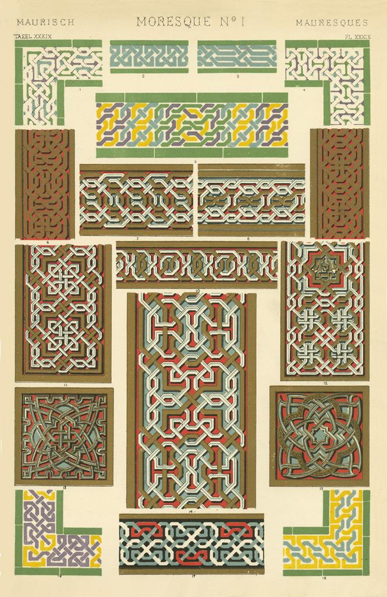
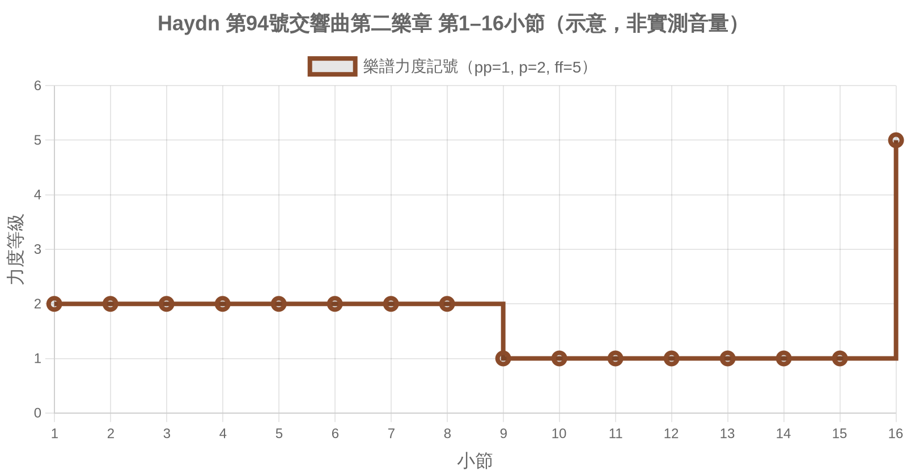

Gombrich 在《The Sense of Order》（1979）主張，人天生帶著一套「秩序感」，會預設眼前的東西照規則延續；規則一旦被打斷，注意力就被拉過去。好的裝飾與好的音樂，都在「太好猜」與「完全猜不到」之間找位置。（經典理論）
1834 年 4 月，英國建築師 Owen Jones 和法國建築師朋友 Jules Goury 來到西班牙格拉納達，在阿爾罕布拉宮（Alhambra）裡一格一格描繪牆上的磁磚與灰泥紋樣。同年 8 月 28 日，Goury 在當地爆發的霍亂疫情中過世。據倫敦 V&A 博物館的典藏紀錄，那場疫情在格拉納達奪走約一萬人。（史料）
Jones 沒有放棄。他回到倫敦，自掏腰包，用當時在英國還很新的彩色石版印刷，花了將近十年，在 1842 至 1845 年間出齊兩冊《Plans, Elevations, Sections and Details of the Alhambra》，收了 68 張彩色版畫。V&A 收藏的一張 Jones 手稿畫的是大使廳（今稱 Comares 廳）牆腳的磁磚護壁：紙上先用鉛筆打了細格，整個幾何圖樣只上色了四分之一。（史料）規則圖樣只要畫出一部分，其餘就能照規則推出來，這張半完成的手稿剛好把這件事攤在眼前。
1856 年，Jones 出版《The Grammar of Ornament》，把阿爾罕布拉的紋樣整理成好幾張「摩爾式」（Moresque）圖版（見圖 1）。一百多年後，藝術史家 Gombrich 想回答的問題，正好是這些圖版擺在讀者眼前的那一個：為什麼人會花這麼多力氣去重複一個圖案，又為什麼重複的東西不一定無聊？

圖 1｜《The Grammar of Ornament》圖版 XXXIX（摩爾式紋樣）。圖版說明指出：第 1–5、16、18 號是馬賽克護壁的邊框，第 6–12、14 號是框住牆面板塊的灰泥帶，第 13、15 號是銘文帶中的方形停頓。來源：Owen Jones，《The Grammar of Ornament》，1856 年初版；此為 B. Quaritch 1910 年對開本，MCAD Library 掃描。授權：CC BY 2.0，來源頁面
E. H. Gombrich（1909–2001）的《The Sense of Order: A Study in the Psychology of Decorative Art》1979 年由 Phaidon 出版。書的副標題已經說明範圍：它談的是裝飾藝術的心理學，接續他 1960 年談繪畫再現的《Art and Illusion》。（經典理論）
秩序感。Gombrich 借用哲學家 Karl Popper 的知識論：我們先假設世界有規則，直到證據推翻它。他寫道，人的整套感官系統主要是用來「監測意料之外的變化」。依照這個看法，規則一路延續時，大腦不必一直盯著，連續的東西會退成背景；規則一斷，那個斷點就跳出來。Gombrich 稱之為連續性的斷裂（break in continuity）。（經典理論；引文依二手文獻：Henri Zerner 書評，《The New York Review of Books》1979 年 6 月 28 日）
單調與混亂之間。Gombrich 在書的開頭說，美感經驗最基本的事實是：愉悅落在無聊與混亂之間的某處。全部都能預測的東西讓人無聊，完全無法預測的東西讓人混亂。（經典理論；依二手文獻：Behrens, "How Form Functions", Gestalt Theory 24(4), 2002，引 Gombrich 1979 第 9 頁）圖 2 把這兩層主張畫成流程。
圖 2｜秩序感的運作方式與「單調／混亂」兩端。本課程依 Gombrich《The Sense of Order》（1979）及 Zerner（1979）、Behrens（2002）的轉述繪製。
框、填、連。談到裝飾者實際在做什麼，Gombrich 把它歸成三件事：框（framing），界定並強調要裝飾的範圍；填（filling），把範圍填滿；連（linking），讓填進去的單位彼此連成網絡。（經典理論；依二手文獻：Zerner 1979 書評）
這本書也收到不少批評。Zerner 在同一篇書評裡認為，Gombrich 研究的「純粹設計」在真實藝術史裡是例外，他的心理學也很難解釋風格的大規模改變。（經典理論的評論）
把圖 1 當成一面牆的分解圖來讀。阿爾罕布拉的室內牆面大致分層：底下是磁磚馬賽克護壁，上方是灰泥浮雕的牆面，中間穿插銘文帶。Jones 在圖版說明裡把這些零件分門別類，剛好可以對上 Gombrich 的框、填、連。（史料：圖版說明；分析為本課程依 Gombrich 理論所做的詮釋）
框。第 6–12、14 號灰泥帶，用途是把牆面切成板塊並框起來。站在牆前的人，先感受到的是「這裡一塊、那裡一塊」，每塊有清楚的邊。邊框本身也是重複的帶狀紋樣，所以眼睛沿著它走時很省力。
填與連。護壁的邊框（第 1–5、16、18 號）由彼此交織的帶狀圖樣組成，一個單位的線條延伸出去，就成了下一個單位的一部分。這就是「連」：每個單位都和鄰居綁在一起，眼睛很難只停在其中一格。交替的規則一旦被看懂，整條邊框就退成背景，Jones 手稿只上四分之一的色也夠用。
停頓。第 13、15 號是銘文帶裡的方形「停頓」（square stops）。一長條連續的銘文，被一個方塊打斷。依 Gombrich 的說法，這個方塊會比旁邊的文字更早被注意到，因為它是連續性裡的斷點。它同時也替長帶分段，讓眼睛有地方換氣。
換到我們身邊的空間也一樣。捷運站一整面同色磁磚，中間嵌一排不同顏色的站名磚；騎樓地磚每隔幾格換一塊防滑磚。只要規則先被建立，那一格不一樣的東西就會被看見。若整面牆每一塊磁磚都不同，那排站名磚反而會被淹沒。
Gombrich 在書末收了一篇〈Some Musical Analogies〉，把同樣的想法延伸到音樂。（經典理論；依二手文獻：Zerner 1979 書評）最好用的例子是 Haydn 的第 94 號交響曲。
這首交響曲 1791 年寫於倫敦，1792 年 3 月 23 日在 Salomon 主辦的音樂會首演。第二樂章的主題很單純：前 8 小節以弱音（p）奏出，接著整段重複，而且更弱（pp），低音弦樂改用撥弦。聽眾的耳朵在 15 個小節裡學會了規則：這段很安靜、而且越來越安靜。第 16 小節，全團突然以極強（ff）奏出一個和弦，定音鼓一起打下去（見圖 3）。英語和法語因此叫它「驚愕」（Surprise）交響曲，德語叫「定音鼓」交響曲。（史料：Henle 版總譜序言）

圖 3｜第二樂章第 1–16 小節的力度記號變化，示意，非實測音量。本課程依 Henle 版序言與樂譜力度記號（p、pp、ff）繪製。
Henle 版序言還記下一個細節：Haydn 的親筆手稿裡有一個被刪掉的早期版本（第 1–32 小節），那裡面還沒有這一記強奏，是後來才加進去的。（史料）他先寫好一段完整、有秩序的旋律，再回頭插進一個斷點。這個斷點之所以有效，靠的是前面 15 小節建立的規則；換成一首從頭到尾忽大忽小的曲子，同樣的和弦就沒那麼嚇人。
誤解一：「Haydn 加那一聲，是為了叫醒睡著的英國聽眾。」這個說法流傳很廣，但 Haydn 本人否認過，應標示為已被反駁。他的傳記作者 Griesinger 在《Biographische Notizen über Joseph Haydn》（Leipzig，1810，第 55 頁起）記載，自己半開玩笑地問 Haydn 是否真是如此，Haydn 回答：不是，他想用新東西讓聽眾驚訝，在倫敦漂亮地登場，不讓同時在倫敦開音樂會的學生 Pleyel 搶走風頭。（史料；依 Henle 版序言所引原文）
誤解二：秩序和驚喜是兩種相反的風格，要選一邊。依 Gombrich 的說法，驚喜只能在秩序裡發生。沒有先建立的規則，就沒有「斷裂」可言，只剩混亂。
誤解三：「無聊與混亂之間」有一個固定的黃金點。Gombrich 認為這個平衡會受習慣和文化品味影響而移動。Kirkus 1979 年的書評也指出，書中用了很大篇幅談紋樣如何因習慣而延續、又因道德觀念改變而被拋棄。對常聽爵士樂的人來說剛剛好的切分音，對第一次聽的人可能已經太亂。（經典理論；依二手文獻：Kirkus Reviews 書評）
看（5 分鐘）：在家裡、捷運站或騎樓，找一片有重複單位的表面：地磚、磁磚牆、百葉窗、欄杆、停車格。先看三十秒，說出它的規則（幾格一循環？顏色怎麼排？）。接著找出規則被打斷的地方：一塊換過的磚、一個排水孔蓋、一根顏色不同的欄杆。注意你是先看到規則，還是先看到斷點。
做（10 分鐘）：拿 12 個相同的小東西（硬幣、瓶蓋、迴紋針、筷子都可以）和 1 個不一樣的東西。在桌上排成一列，用手機拍下三個版本： (1) 12 個一模一樣、等距排列； (2) 同樣的排列，把那個不一樣的東西放進其中一格； (3) 把 13 個東西隨手撒在桌上。 最後再試一次：用筷子或紙條在 (2) 的外圍框出一個範圍，再拍一張。
回顧（5 分鐘）：
來源 | 類型 | 查核日期 |
Henri Zerner, "The Sense of Sense"（Gombrich《The Sense of Order》書評），The New York Review of Books, 1979-06-28：連結 | 經典理論（二手轉述與評論） | 2026-11-16 |
Kirkus Reviews，《The Sense of Order: A Study in the Psychology of Decorative Art》書評，1979：連結 | 經典理論（二手轉述） | 2026-11-16 |
Roy R. Behrens, "How Form Functions: On Esthetics and Gestalt Theory", Gestalt Theory 24(4), 2002（引 Gombrich 1979, p. 9）：PDF | 經典理論（二手文獻） | 2026-11-16 |
V&A 典藏：Owen Jones，大使廳磁磚護壁研究手稿（9156M）：連結 | 史料 | 2026-11-16 |
Smithsonian Libraries：《Plans, Elevations, Sections, and Details of the Alhambra》：連結 | 史料 | 2026-11-16 |
G. Henle Verlag，Haydn《Sinfonie G-dur Hob. I:94》HN 9062 序言（含 Griesinger 1810 引文）：PDF | 史料 | 2026-11-16 |
Wikipedia "Symphony No. 94 (Haydn)"（僅用於核對樂章結構與 Griesinger 英譯出處：Gotwals 譯，Haydn: Two Contemporary Portraits, University of Wisconsin Press）：連結 | 史料（輔助核對） | 2026-11-16 |
圖 1 授權頁面：Wikimedia Commons，The Grammar of Ornament Plate XXXIX（CC BY 2.0）：連結 | 圖片授權 | 2026-11-16 |
延伸閱讀：E. H. Gombrich,《The Sense of Order: A Study in the Psychology of Decorative Art》, Phaidon, 1979（書末〈Some Musical Analogies〉）；Owen Jones,《The Grammar of Ornament》, 1856。